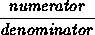
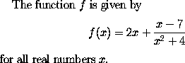
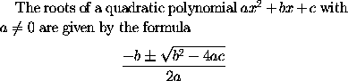
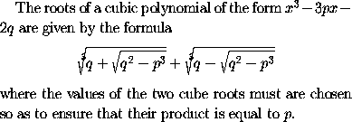

Fractions of the form
are obtained in LaTeX using the construction
For example, to obtain\frac{numerator}{denominator}.
one would type
The function $f$ is given by
\[ f(x) = 2x + \frac{x - 7}{x^2 + 4}\]
for all real numbers $x$.
To obtain square roots one uses the control sequence
For example, to obtain\sqrt{expression}.
one would type
The roots of a quadratic polynomial $a x^2 + bx + c$ with
$a \neq 0$ are given by the formula
\[ \frac{-b \pm \sqrt{b^2 - 4ac}}{2a} \]
In LaTeX, an nth root is produced using
For example, to obtain\sqrt[n]{expression}.
in LaTeX, one would type
The roots of a cubic polynomial of the form $x^3 - 3px - 2q$
are given by the formula
\[ \sqrt[3]{q + \sqrt{ q^2 - p^3 }}
+ \sqrt[3]{q - \sqrt{ q^2 - p^3 }} \]
where the values of the two cube roots must are chosen
so as to ensure that their product is equal to $p$.